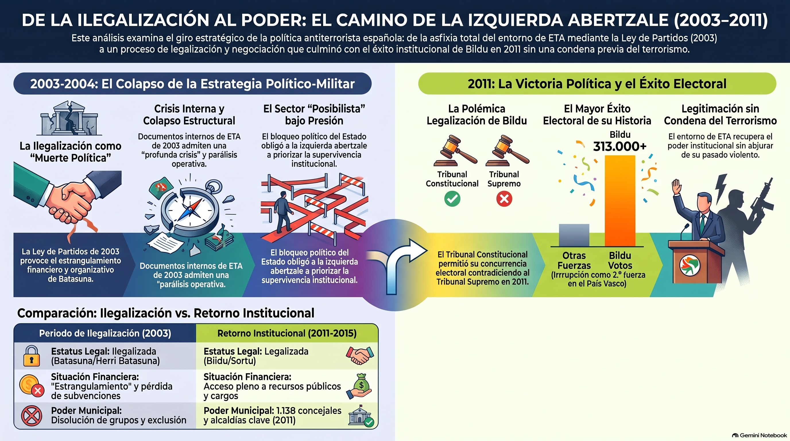

El informe
Este documento conserva el análisis generado en NotebookLM y aportado por el usuario. Sus valoraciones y tesis causales pertenecen a ese material. La sección Materiales y revisión recoge dos precisiones documentales; no constituye una verificación exhaustiva del informe.
Introducción
¿Es posible que un Estado derrote policialmente a un grupo terrorista y, al mismo tiempo, le permita obtener una victoria política? El final de ETA en España plantea una incómoda paradoja: mientras las armas callaron, sus herederos políticos lograron una legitimidad institucional sin precedentes. Este curso analiza críticamente la política antiterrorista de las últimas décadas para desentrañar cómo se gestionó el fin de la violencia y qué precio pagó la democracia española.
Objetivos de Aprendizaje
- Analizar la estrecha relación entre la ideología nacionalista vasca y la justificación del terrorismo de ETA.
- Comprender la evolución de la estrategia del Estado: desde el consenso policial de la Ley de Partidos hasta las controvertidas negociaciones políticas.
- Evaluar el papel de la internacionalización, la mediación externa y la legalización de marcas políticas como Bildu.
- Reflexionar sobre el impacto ético y político del posterrorismo en las víctimas y la memoria histórica.
Nacionalismo y Violencia: Las Raíces del Odio
Para entender a ETA, es imprescindible comprender que su terrorismo no nació en el vacío, sino en el seno de una ideología nacionalista compartida. Fundada en 1958 como una disidencia de las juventudes del Partido Nacionalista Vasco (PNV), la banda se convirtió en el brazo armado de un proyecto de construcción nacional excluyente.
Durante décadas, el nacionalismo democrático e institucional mantuvo una actitud ambivalente. Aunque condenaba los asesinatos, con frecuencia compartía los objetivos políticos de la banda. El consejero de Interior del PNV, Juan María Atutxa, llegó a declarar en los años noventa: «Hemos condenado métodos, no ideas». Esta distinción permitió que la causa por la que ETA asesinaba quedara blindada e incluso legitimada.
- La narrativa del conflicto: ETA presentó su violencia como una respuesta defensiva a una supuesta "opresión secular" de España contra el pueblo vasco. Al colectivizar el conflicto, las víctimas individuales (policías, políticos constitucionales, periodistas) eran deshumanizadas y presentadas como "enemigos legítimos".
- La espiral del silencio: El miedo sistemático impidió que la sociedad vasca no nacionalista ejerciera sus derechos civiles en igualdad de condiciones. Quienes se oponían al proyecto soberanista eran empujados a la marginación social o al exilio interior.
Dato sorprendente: A diferencia de otros movimientos terroristas, la probabilidad de ser víctima de ETA disminuía drásticamente si se profesaba la ideología nacionalista. Esto convirtió la violencia en un mecanismo de depuración y asimetría política en el País Vasco.
El Declive Operativo: El Estado Demuestra su Fuerza
A finales de los años noventa y principios de los dos mil, el Estado español cambió su paradigma de actuación. Tras la ruptura de la "tregua trampa" de 1998, los partidos constitucionalistas (PP y PSOE) firmaron en el año 2000 el Pacto por las Libertades y contra el Terrorismo.
Este acuerdo estratégico no solo potenció la eficacia policial y judicial en colaboración con Francia, sino que atacó el talón de Aquiles de la banda: su entramado político y financiero.
- La Ley de Partidos (2002): Permitió la ilegalización de Batasuna, el brazo político de ETA. Por primera vez, el Estado demostró que usar las instituciones democráticas para amparar el terrorismo tenía consecuencias.
- El estrangulamiento financiero: La pérdida de subvenciones públicas, la clausura de sedes y la persecución de organizaciones satélites (como el sindicato LAB o la organización juvenil Segi) provocaron un caos interno en el movimiento radical.
- El mito de la imbatibilidad roto: Alrededor de 2003 y 2004, los informes del Centro Nacional de Inteligencia (CNI) y la policía coincidían en que ETA atravesaba su crisis más profunda. Sus documentos internos intervenidos reflejaban desesperación, falta de militantes experimentados y temor a una "muerte política" definitiva.
¿Por qué si el Estado tenía a la organización contra las cuerdas no se llegó a un final estrictamente policial? Las prisas políticas y la tentación del atajo negociado cambiaron el rumbo de los acontecimientos.
El Giro Estratégico y el Lenguaje del "Proceso de Paz"
Con la llegada de José Luis Rodríguez Zapatero al Gobierno en 2004, la política antiterrorista sufrió un giro radical. Se sustituyó la estrategia de asfixia y derrota por la de la negociación, inaugurando un periodo marcado por un uso creativo y eufemístico del lenguaje.
Para justificar concesiones políticas y judiciales ante la opinión pública, el Gobierno y diversos sectores mediáticos construyeron la narrativa del "proceso de paz".
- La manipulación semántica: Se empezó a utilizar "proceso de paz" para evitar la palabra "negociación". El propio presidente del Gobierno llegó a calificar los atentados mortales de ETA como "accidentes" para no romper el marco de diálogo.
- La flexibilización de la justicia: Con el fin de "blindar" las conversaciones de Oslo y Ginebra, se presionó a la fiscalía y a la Audiencia Nacional. Casos como el trato de favor al etarra De Juana Chaos o el chivatazo policial del bar Faisán evidenciaron los peajes que el Estado estaba dispuesto a asumir.
- La deslegitimación del discrepante: Quienes criticaron la negociación o exigieron el cumplimiento de la ley (como el principal partido de la oposición o ciertos movimientos cívicos como ¡Basta Ya!) fueron estigmatizados como "enemigos de la paz" o acusados de tener "alergia a la paz".
Este modelo de negociación rescató políticamente a una Batasuna que se encontraba al borde de la desaparición, dándole oxígeno y legitimidad en el plano internacional.
La Legalización de Bildu y el Fin de la Violencia
Tras la ruptura formal de la tregua en 2007 y el regreso temporal a los atentados, la "izquierda abertzale" comprendió que la continuidad de la lucha armada de ETA impedía su supervivencia legal. Sin embargo, en lugar de romper con la banda, diseñaron una calculada escenificación de distanciamiento apoyada por facilitadores internacionales.
El hito definitivo de este proceso fue la legalización de la coalición Bildu en mayo de 2011.
- El choque de tribunales: El Tribunal Supremo ilegalizó a Bildu al constatar, mediante informes policiales, que sus listas estaban instrumentalizadas por el complejo ETA/Batasuna como un fraude de ley. No obstante, en una polémica decisión de carácter marcadamente político, el Tribunal Constitucional revocó la sentencia y permitió su participación electoral.
- La Conferencia de Aiete (2011): Diseñada por el entorno de ETA con la connivencia del Gobierno socialista, esta conferencia internacional con figuras como Kofi Annan legitimó el relato del "conflicto bilateral". Se instó a los gobiernos español y francés a negociar con ETA en igualdad de condiciones, presentándola como un actor político.
- El anuncio de ETA: Tres días después de Aiete, el 20 de octubre de 2011, ETA anunció el "cese definitivo de su actividad armada". Lo hizo sin disolverse, sin entregar las armas en ese momento y reivindicando la eficacia histórica de su campaña de terror.
La paradoja final: La derrota operativa de la banda, forjada durante años de asfixia policial, acabó diluida en un relato de "paz sin vencedores ni vencidos" que catapultó a los herederos de Batasuna a las mayores cotas de poder institucional de su historia.
Síntesis
Conclusiones Clave
- La indivisibilidad de fines y medios: El terrorismo de ETA estuvo intrínsecamente ligado a una ideología nacionalista que justificó y amparó moralmente la persecución del diferente.
- La eficacia de la firmeza democrática: El periodo de mayor debilidad de ETA se logró mediante la asfixia integral (policial, judicial, financiera e institucional) y la unidad política en torno al Pacto por las Libertades.
- Los costes de la negociación: Las conversaciones del Gobierno socialista con ETA rehabilitaron políticamente al brazo de la banda, salvándolo de la asfixia y permitiendo su regreso a las instituciones.
- El dilema de la memoria: El cese de la violencia no significó el triunfo ético de la democracia; la legitimación de Bildu sin una condena inequívoca del pasado de ETA ha dejado pendientes las demandas de justicia de más de 300 crímenes sin resolver.
El cerco a ETA, 2000–2004
Las 15 diapositivas del PowerPoint original, conservadas como imágenes. Usa los botones o las flechas del teclado cuando el visor tenga el foco. Pulsa una miniatura para abrirla en grande.
Portada sobre el cerco a ETA entre 2000 y 2004 y los hitos que asfixiaron al terrorismo.
Mapa mental
Explora sus cinco ramas principales, despliega los nodos o busca un concepto. Se conservan las etiquetas originales del mapa aportado.
La Derrota del Vencedor: El Final de ETA
Nacionalismo Vascongado e Ideología
Nacionalismo Institucional (PNV)
Legitimación de fines nacionalistas
Condena de métodos, no de ideas
Interpretación del conflicto político
Hegemonía social y política
Nacionalismo Radical
Ideología excluyente y xenófoba
Vanguardia de la resistencia
Religión de sustitución
Odio al adversario ideológico
Estrategia Político-Militar
Estrategia de Masas
Entramado KAS y organizaciones pantalla
Control del espacio público y festivo
Lucha institucional y callejera
Financiación y subvenciones
Socialización del Sufrimiento
Persecución de cargos no nacionalistas
Intimidación a periodistas y profesores
Estrategia del desistimiento
Aislamiento de los amenazados
Impacto en la Sociedad Vasca
Espiral del Silencio
Miedo al aislamiento social
Déficit democrático electoral
Mimetización con el nacionalismo
Renuncia a derechos civiles
Exclusión Moral del Adversario
Estigmatización de fuerzas de seguridad
Categorización de 'malos vascos'
Indiferencia ante el asesinato
Desprecio social al disidente
Las Víctimas del Terrorismo
Deshumanización y Persecución
Selección por criterios ideológicos
Privación de la normalidad vital
Inexistencia de justicia política
Soledad y abandono social
Humillación en el Posterrorismo
Homenajes públicos a etarras
Equiparación victimista de sufrimientos
Blanqueo de la historia criminal
Desactivación como grupo de presión
Déficits del Final de ETA
La Derrota del Vencedor
Derrota policial sin victoria política
Logros políticos del terrorismo
Impunidad histórica y moral
Falsedad de la derrota total
Estados de Negación
Denegación interpretativa del conflicto
Neutralización de responsabilidades
Uso de eufemismos y lenguaje manipulado
Relativismo moral institucional
Ver el mapa gráfico original
Mapa vectorial completo; amplía y desplázate para leerlo.
Evolución de la izquierda abertzale
Infografía original aportada. Sus gráficos y valoraciones se reproducen como parte del material de estudio.

Cómo los eufemismos blanquearon a ETA
Audio original aportado desde NotebookLM.
El archivo no incluye transcripción. Esta edición integra su reproducción, sin atribuirle un contenido transcrito ni una revisión de sus afirmaciones.
Notas de lectura
Se guardan en este navegador si permite almacenamiento local. Descarga una copia para conservarlas o trasladarlas.
Materiales y observaciones de revisión
Dos precisiones documentales
Ley de Partidos: es la Ley Orgánica 6/2002, de 27 de junio. El informe utiliza 2002; la infografía mezcla esa fecha con 2003.
Bildu en 2011: el litigio citado trató de la anulación de candidaturas electorales. La STC 62/2011, de 5 de mayo, estimó el amparo y anuló la sentencia del Tribunal Supremo de 1 de mayo. La fórmula del informe «ilegalizó a Bildu» simplifica el objeto de ese procedimiento; expresiones como «decisión marcadamente política» son valoraciones del informe.
BOE · Ley Orgánica 6/2002, de 27 de junio
Tribunal Constitucional · STC 62/2011, de 5 de mayo
Consulta documental realizada el 18 de octubre de 2026. Las demás cifras, citas personales, atribuciones de intenciones y tesis causales del informe requieren sus fuentes originales para una comprobación completa. No se han añadido como hechos nuevos.
Descargar los materiales


Autoría y derechos: materiales facilitados por el usuario, exportados de NotebookLM. No se presume una licencia abierta. Esta edición integra y organiza los archivos, sin atribuirse su autoría.